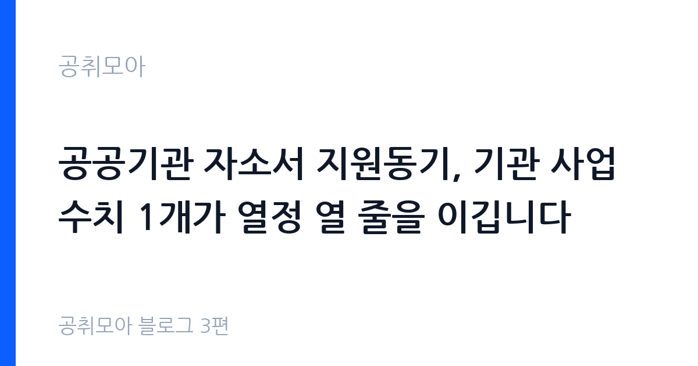

공공기관 자소서 지원동기, 기관 사업 수치 1개가 열정 열 줄을 이깁니다
2026-10-16 · 공취모아 블로그 3편

지원동기에서 가장 많이 떨어지는 이유
기관명을 다른 기관으로 바꿔도 문장이 그대로 말이 되는 자소서가 탈락 1순위입니다. 지역 발전에 기여하고 싶다, 공공의 가치를 실현하고 싶다는 문장은 어느 기관에나 붙일 수 있습니다. 심사자는 그 문장에서 지원자가 우리 기관을 이해하고 있는지 판단할 근거를 찾지 못합니다. 지원동기는 왜 이 기관이어야 하는지에 대한 답이므로, 그 기관만의 사업과 숫자가 들어가야 합니다. 같은 이유로 기관 소개 페이지 문장을 그대로 옮겨 적는 것도 위험합니다. 다른 지원자와 똑같은 문장이 나오면 변별력이 사라집니다.
기관 사업 수치는 어디서 확인하나
1차 소스는 기관 누리집입니다. 사업보고서와 연차보고서, 보도자료, 기관 소개 페이지에 사업 규모와 성과가 숫자로 적혀 있습니다. 공공기관이라면 알리오(공공기관 경영정보 공개시스템)에서 기관별 직원 평균보수와 경영실적을 분기 단위로 확인할 수 있습니다(2026년 1분기 공시 자료가 올라와 있습니다). 국가기관과 지자체 공고는 나라일터, 공공기관 공고는 잡알리오 원문에서 사업 설명을 확인합니다. 인용할 때는 2026년 사업보고서 기준처럼 기준일을 함께 적으세요. 블로그 글이나 기사 문장을 그대로 옮기면 다른 지원자와 겹치니, 숫자만 가져와 내 경험과 연결하는 방식이 안전합니다.
| 확인할 것 | 기관 사업 규모(건수·인원·예산), 최근 성과, 올해 중점 사업 |
|---|---|
| 1차 소스 | 기관 누리집 사업보고서·보도자료, 알리오 경영공시(평균보수·경영실적) |
| 표기 원칙 | 수치 옆에 기준일 표기, 출처가 불분명한 숫자는 쓰지 않음 |
자소서 네 문항, 이렇게 배분하세요
공공기관 자소서는 보통 지원동기, 성장과정, 직무역량(경험), 입사 후 포부 네 문항입니다. 힘을 실을 곳은 지원동기와 직무역량입니다. 성장과정은 환경 설명보다 그 환경이 만든 습관을 쓰고, 입사 후 포부는 기관 사업과 연결해 1년·3년 계획으로 좁히세요. 문항마다 같은 경험을 반복해서 쓰면 분량은 채워지지만 평가는 떨어집니다. 경험은 문항별로 다른 것을 쓰고, 부족하면 아르바이트와 동아리, 수업 프로젝트까지 끌어오시면 됩니다. 성장과정에서 가족사를 길게 늘어놓는 서술은 블라인드 취지와도 맞지 않습니다.
경험은 숫자로 바꿔 쓰세요
성실하게 맡은 일을 끝까지 해냈다는 문장은 누구나 씁니다. 회원 300명 규모 행사를 4주 준비해 참여율 82%를 기록했다는 문장은 나만 쓸 수 있습니다. 숫자는 규모, 기간, 결과 세 가지로 만들면 됩니다. 몇 명·몇 건으로 규모를 쓰고, 몇 주·몇 개월로 기간을 쓰고, 몇 % 또는 몇 건 감소로 결과를 쓰세요. 정확한 기억이 없으면 확인 가능한 범위까지만 쓰고 추정치는 약을 붙이시기 바랍니다. 면접에서 그 숫자의 근거를 다시 묻기 때문에 부풀린 수치는 역효과입니다.
블라인드 채용에서 스스로 쓰면 안 되는 것
공공기관과 지방공기업은 블라인드 채용 가이드라인에 따라 입사지원서와 면접에서 출신지역, 출신학교, 가족관계 등 편견을 유발할 수 있는 항목을 요구하지 않습니다. 지원자도 같은 정보를 자소서에 스스로 적지 않는 편이 안전합니다. 아버지가 공무원이라서, ○○고등학교 시절 같은 문장은 감점 요인이 될 수 있습니다. 지방 공고라도 출신 지역을 강조하기보다는 그 지역 사업에 대한 이해와 근무 계획으로 풀어내세요. 나이와 학력이 자유로운 무기계약직 공고에서도 마찬가지입니다.
분량과 문장은 두괄식으로
문항당 500~700자, 단락은 3~5문장이 읽기 좋습니다. 각 문항의 첫 문장에 결론을 쓰고 뒤에서 근거를 붙이는 두괄식 구성이 심사자의 읽는 시간을 줄여 줍니다. 접속어와 미사여구를 걷어내면 같은 분량에 정보가 두 배로 들어갑니다. 검수할 때는 소리 내어 읽어보세요. 한 호흡에 읽히지 않는 문장은 심사자도 두 번 읽게 됩니다. 공고문에 글자 수 제한이 있으면 제한의 90% 이상을 채우되 넘기지는 마시기 바랍니다.
제출 전 5분 검수 체크리스트
첫째, 기관명을 다른 기관명으로 바꿔 읽어보세요. 그대로 말이 되면 다시 쓰셔야 합니다. 둘째, 문항 지시문이 요구한 내용을 모두 답했는지 확인하세요. 셋째, 숫자와 고유명사 오타를 확인하세요. 기관 이름과 사업명 오타는 치명적입니다. 넷째, 블라인드 위반 정보가 들어가지 않았는지 보세요. 다섯째, 글자 수와 파일 형식(PDF·hwp)이 공고 요구와 맞는지 확인하세요. 파일명 규칙이 있는 공고가 많으니 접수 전에 한 번 더 대조하시기 바랍니다. (2026-10-16 기준)
자주 묻는 질문
아르바이트, 동아리, 수업 프로젝트에서 맡은 역할을 직무 언어로 옮기면 됩니다. 기관 사업과 닿는 경험 하나면 충분합니다.
도구 사용 자체보다 검증되지 않은 수치와 빈 결론이 문제입니다. 수치는 원출처와 대조하고 본인 경험으로 다시 쓰시기 바랍니다.
기관 사업, 내 경험, 실행 계획 순서로 확장하세요. 같은 말을 반복해 채우면 감점 요인이 됩니다.
함께 읽으면 좋은 글
이 글은 공취모아가 공개 자료를 정리한 정보 제공용 글입니다. 합격을 보장하지 않으며, 기관별 요구사항은 원문 공고문을 기준으로 확인하시기 바랍니다.